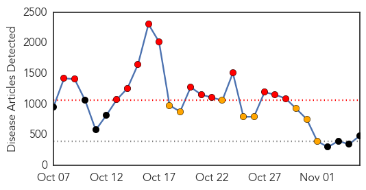
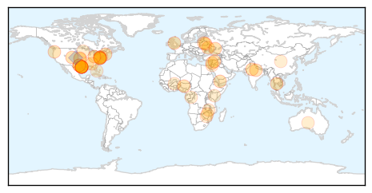

Ebola
30-Day Web Trend
14 alerts, 8 warnings

30-Day Twitter Trend
2 alerts, 9 warnings

Article Locations

Article Confidences

Top Articles:
- 1.000
- The Ebola Outbreak Is Getting Worse in Sierra Leone
- 1.000
- Alamance Co. Health Department Monitoring 5 People For Ebola
- 1.000
- UW Ebola preparedness plans reflect changing situation
- 1.000
- Foreign Affairs Minister leads Bahamas delegation to CARICOM Ebola meeting
- 1.000
- Food endangers quarantine
- 1.000
- Critical lessons to learn from Ebola outbreaks
- 1.000
- Ebola: health fears stop British journalist from hosting awards
- 1.000
- Guest Opinion: What you should know about Ebola
- 1.000
- Ebola Hits Health Care Access for Other Diseases
- 1.000
- US Ebola Researchers Plead For Access To Virus Samples
- 1.000
- Bermuda to screen visitors who travelled to West Africa
- 1.000
- Ebola outbreak: The scientist heading for Guinea who thinks he may find a cure
- 1.000
- Ebola Outbreak 2014: Spain To Be Declared Ebola-Free
- 1.000
- Lack Of Virus Samples In US Hampers Efforts To Track Its Changes
- 1.000
- Australia to Hire Private Medical Firm to Help Sierra Leone Contain Virus
- 1.000
- Ebola researchers can't get access to virus samples
- 1.000
- Latest Updates WHO Lowers Ebola Death Toll Estimate, Says Virus Slowing in Liberia
- 1.000
- Spotlight: More aid, funds needed in anti-Ebola fight
- 1.000
- US Ebola researchers plead for access to virus samples
- 1.000
- Ebola’s orphans: Survivors care for children left behind by disease
- 1.000
- U.S. Aid in Africa Reduced Ebola Deaths in Liberia by 50%
- 1.000
- WHO declares end of Ebola outbreak in Sierra Leone, but neighbor Guinea struggles to end virus
- 1.000
- Thousands break Ebola quarantine to find food
- 1.000
- Beware of the Ebola
- 1.000
- Is quarantine merited for Ebola-exposed health-care workers? The science says no
- 1.000
- Mission Health lays out Ebola plans
- 1.000
- Fearing Ebola? Doctors say get a flu shot
- 1.000
- Ohio Ebola Scare Ends as Infected Nurse’s Contacts Clear
- 1.000
- Md. to stop providing updates on Ebola investigations, unless cases confirmed
- 1.000
- Obama administration to ask Congress for $6 billion to fight Ebola
- 1.000
- Nobel Laureates and Ebola Virus Quarantine
- 1.000
- UK opens Ebola treatment center in Sierra Leone, British troops arrive — RT UK
- 1.000
- In Sierra Leone, vaccinations another casualty of Ebola - Sierra Leone
- 1.000
- Is Ebola Outbreak Entering New Phase?
- 1.000
- Worst Ebola outbreak on record tests global response
- 1.000
- Ebola orphans rejected by extended families
- 1.000
- Dialogo forum Breaking News From South America the Caribbean
- 1.000
- Ebola hits health care access for other diseases
- 1.000
- The Brookhaven Courier
- 1.000
- Is quarantine merited for Ebola exposed?
- 0.999
- Cubans lead global response to Ebola epidemic
- 0.999
- WHO's next Africa chief is elected
- 0.999
- Thousands Break Ebola Quarantine to Find Food
- 0.999
- Ebola epidemic: Selfishness and sacrifice
- 0.999
- On Ebola: Finding Leaders Where We Need Them
- 0.999
- Ebola exacerbates West Africa’s poverty crisis
- 0.999
- WHO elects new Africa director amid Ebola epidemic
- 0.999
- Ebola scare patient clear
- 0.999
- Ebola Today: Health Officials Monitoring 357 People in NYC for Ebola
- 0.999
- Ebola outbreak: Barack Obama 'to ask Congress for $6bn'
Showing top 50 articles...
Top Tweets:
- 0.951
- Going backward? @WHO releases Ebola update & the case/death counts have declined. 13042 cases, 4818 deaths. Last time 13567 & 4951 1/2
- 0.947
- The Ebola Communication Network at Johns Hopkins Bloomberg School of Public Health praises Africa Stop Ebola... http://t.co/TIbc8qTkGq
- 0.945
- Most of all we pray for the non-affected Ebola African state who have helped and supported the Ebola affected regions in WestAfrica
- 0.930
- Ebola outbreak: UK centre opening in Sierra Leone. http://t.co/sXteDV45b4
- 0.920
- RT: Going backward? @WHO releases Ebola update & the case/death counts have declined. 13042 cases, 4818 deaths. Last time …
- 0.879
- Africa’s Image and the Ebola Epidemic ebolaoutbreak http://t.co/lEnGkO4v7m
- 0.872
- Ebola information that matters: https://t.co/IT2tGeAnUO curated view of some of the best Ebola information from around the web
- 0.869
- New Ebola outbreak in Sierra Leone raises fears of new infection chain ebolaresponse http://t.co/rzJznzCF5N
- 0.869
- Ebola: les anthropologues en renfort ebolaresponse http://t.co/qIuNcvUbJ9
- 0.866
- Tulane's L. Moses:until local Ebola workers are given protection/better care there won't be staff to run Ebola vaccine trials.TropMed14
- 0.863
- Ebola outbreak in Koinadugu, Sierra Leone, prompts call for help from chief. http://t.co/l63Zg1KNlA
- 0.845
- RT: MT: Pres Sirleaf tours 25-bed medical unit w/ @USAID DART Leader. USPHS will provide health care 4 Ebola http://…
- 0.843
- Obama Gets Ebola Update From Virus Response Team. http://t.co/Bugl2zBroi
- 0.836
- Webster nurse to help Ebola patients in Liberia. http://t.co/ZZVGqkpZv4
- 0.811
- hey UW Public Health I see that you are tweeting Ebola, check out http://t.co/U0M8jd1ElC for up to the minute Ebola info.
- 0.811
- hey UW Public Health I see that you are tweeting Ebola, check out http://t.co/U0M8jd1ElC for up to the minute Ebola info.
- 0.807
- Inside an Ebola Testing Lab in Mali Ebola ebolaresponse http://t.co/xzN8YsKy5S
- 0.805
- Guinée. Un soutien psychosocial essentiel dans la réponse à Ebola ebolaresponse http://t.co/lGD94IpONh
- 0.781
- hey Medical Health News I see that you are tweeting Ebola, check out http://t.co/NJncI8Fm5n for up to the minute Ebola info.
- 0.773
- Ebola Rates Accelerate in Sierra Leone http://t.co/dh7eWFk5Qy
- 0.759
- RT: Songs like ‘Ebola: Invisible Enemy’ are and accessible way to share health information http://t.co/9rNIOVzOSJ ebola
- 0.746
- Models overestimate Ebola cases ebolaresponse http://t.co/AAAuc22dPL
- 0.729
- RT: Liberia each week have fewer Ebola cases. The challange now is that many smaller outbreaks occur across the country http:…
- 0.723
- RT: 1 Oct I did this https://t.co/TEr96bjvmn In Liberia I have now seen the Ebola epidemic curve flatten. But victory is many,…
- 0.718
- Three Ways Health Officials And Doctors Fumbled In Communicating Ebola Risk. http://t.co/omvqt1bgr9
- 0.717
- RT: 2/2: lower Ebola numbers due to a change in data sources. 546 healthcare workers have been infected. 310 died. ht…
- 0.697
- hey Dignity Health I see that you are tweeting Ebola, check out http://t.co/U0M8jd1ElC for up to the minute Ebola info.
- 0.697
- hey Dignity Health I see that you are tweeting Ebola, check out http://t.co/NJncI8Fm5n for up to the minute Ebola info.
- 0.696
- RT: Liberia: In 2nd phase of Ebola the decrease of new cases has leveled off at ca. 20 known new/day & with suspected cases in…
- 0.687
- hey Health Equity SF I see that you are tweeting Ebola, check out http://t.co/U0M8jd1ElC for up to the minute Ebola info.
- 0.680
- Spanish nursing aid has recovered from Ebola, goes home. Treatment success rate in US, Europe roughly the inverse of that in West Africa.
- 0.675
- hey UW Global Health I see that you are tweeting Ebola, check out http://t.co/U0M8jd1ElC for up to the minute Ebola info.
- 0.675
- hey UW Global Health I see that you are tweeting Ebola, check out http://t.co/U0M8jd1ElC for up to the minute Ebola info.
- 0.675
- hey UW Global Health I see that you are tweeting Ebola, check out http://t.co/U0M8jd1ElC for up to the minute Ebola info.
- 0.675
- hey UW Global Health I see that you are tweeting Ebola, check out http://t.co/U0M8jd1ElC for up to the minute Ebola info.
- 0.675
- hey UW Global Health I see that you are tweeting Ebola, check out http://t.co/U0M8jd1ElC for up to the minute Ebola info.
- 0.663
- hey Medical Thriller I see that you are tweeting Ebola, check out http://t.co/U0M8jd1ElC for up to the minute Ebola info.
- 0.653
- Officials: Number of New Ebola Cases in W. Africa Declining. http://t.co/BTg2ZwVtOm
- 0.648
- hey Intl Medical Corps I see that you are tweeting Ebola, check out http://t.co/NJncI8Fm5n for up to the minute Ebola info.
- 0.648
- hey Health Issues Now I see that you are tweeting Ebola, check out http://t.co/U0M8jd1ElC for up to the minute Ebola info.
- 0.648
- hey Health Issues Now I see that you are tweeting Ebola, check out http://t.co/U0M8jd1ElC for up to the minute Ebola info.
- 0.648
- hey Health Issues Now I see that you are tweeting Ebola, check out http://t.co/U0M8jd1ElC for up to the minute Ebola info.
- 0.648
- hey Health Issues Now I see that you are tweeting Ebola, check out http://t.co/U0M8jd1ElC for up to the minute Ebola info.
- 0.641
- Updated Fact Sheet on How Ebola Spreads: There is no evidence Ebola is spread by coughing or sneezing. http://t.co/ot3sGohVMv
- 0.638
- Guinée. Chroniques d'une lutte acharnée contre Ebola ebolaoutbreak http://t.co/J4r1aM9pju
- 0.638
- Ebola : où sont passés les milliardaires africains ? ebolaresponse http://t.co/FxuQPERocI
- 0.638
- Dossier Ebola. Historique ebolaoutbreak http://t.co/HwKAZBKrSa
- 0.631
- British-funded Ebola treatment centre opens in Sierra Leone http://t.co/dr9E4wKpUG
- 0.626
- Sierra Leone. Ebola quarantines violated in search of food ebolaoutbreak http://t.co/6CiwK3HbQs
- 0.624
- Ebola patient Dr. Craig Spencer jamming out in Bellevue quarantine. http://t.co/Fy0QRKrTjN
Showing top 50 tweets...
Unknown
30-Day Web Trend
0 alerts, 0 warnings
30-Day Twitter Trend
2 alerts, 0 warnings
Article Locations
Article Confidences

Top Articles:
- 0.955
- Researchers Tap Web Chatter To Figure Out Who's Sick
- 0.939
- 'Kissing Bug' Now Spreading Tropical Disease in U.S.
- 0.935
- Health officials worried as diphtheria cases reported from different areas in Alwar
- 0.929
- Central Ohio sees uptick in serious flu cases
- 0.917
- Chicago Tribune
- 0.917
- Chicago Tribune
- 0.912
- Belarus Suspends Pork Exports to Russia
- 0.910
- The world windows to Thailand
- 0.869
- Students, staff at S. Boston elementary school sickened by possible norovirus
- 0.866
- Obama says open to 'responsible' changes to signature health law
- 0.866
- Obama says wants 'right-sized' authorization to fight Islamic State
- 0.866
- Putin regrets Ukraine ceasefire is not working
- 0.866
- Burkina Faso transition should last up to a year
- 0.866
- Algerian killed, Frenchman wounded in Yemen attack-police source
- 0.866
- Eleven children killed when mortars hit Damascus school -monitoring group
- 0.866
- Ukraine PM says rebel-led regions will never receive funds from Kiev
- 0.866
- Russia's Gazprom says gets first gas debt repayment from Ukraine
- 0.866
- FACTBOX-Typhoon Haiyan one year on
- 0.866
- Republican Greg Abbott wins Texas governor's race, networks project
- 0.864
- Misdiagnosis: Is it Chronic Lyme Disease or Something Else?
- 0.854
- Experts warn of Chagas disease in US
- 0.850
- Zoo vet treating lions develops flu-like symptoms, relieved
- 0.841
- H7 Outbreak in Oregon Closes Montessori School
- 0.840
- Experts Warn of Cases of Chagas Disease in U.S.
- 0.829
- Chagas Disease Making Its Way North Of The Border
- 0.758
- Is Chagas Disease Becoming the New U.S. Public Health Threat?
- 0.726
- 'Kissing bug' disease spreading in the United States
- 0.692
- US Could See Increased Infections From Kissing Bug
- 0.685
- Kissing Bug should be the Big Worry
- 0.668
- While Mugabe globe-trots, Doctors strike cripples health delivery
- 0.624
- Triatomine Bugs Now Spreading Tropical Disease in US
- 0.618
- TB test scheduled for Shaw High School students, employees
- 0.613
- Home health, hospice RNs needed as population ages
- 0.591
- The Post
- 0.588
- Signs, Symptoms & Treatment
- 0.577
- Polio Virus Mutates Posing Serious Challenges for Eradication Campaign
- 0.576
- Ministry says vaccine is safe, recommends action against bishop
- 0.571
- After Midterm battering, don't expect Obama to 'play dead'
- 0.571
- Obama reaches out to Republicans after midterms
- 0.571
- Palestinian kills Israeli in Jerusalem car attack
- 0.571
- Transition timetable set for Burkina Faso after crisis
- 0.571
- African leaders arrive in Burkina Faso for crisis talks
- 0.568
- The Australian Dairyfarmer
- 0.560
- 'Kissing bug' makes its way into Texas
- 0.556
- Readmission rates above average for survivors of septic shock, study finds
- 0.552
- Beware of the “Kissing Bug”
- 0.549
- Readmission Rates Above Average for Survivors of Septic Shock, Penn Study Finds
- 0.547
- 'Flu Fighter To-Go' brings vaccine to you
- 0.541
- Readmission rates above average for survivors of septic shock, Penn study finds
- 0.541
- Fluoride to stay in Salina water
Showing top 50 articles...
Top Tweets:
- 0.830
- RT: Saudi Health Ministry admits MERS outbreak at Taif isn't under control; they expect more cases. Kudos for openness. h…
- 0.741
- RT: Fight the flu! Protect yourself & others. Get a flu vaccine every season. http://t.co/NRqMeJDwjz